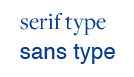

02. Web vs. Print
Screens and Paper Have Different Protocols.
web vs. print
Barrier for Entry
Publishing on the web is different from print in almost every way except for the presence of a human creator and the written word. Even that isn’t guaranteed with the advent of embedded media and generative programming. Internet publishing has no printing costs, no chain of suppliers or distributors, and everything can be served from a remote web host with your domain slapped on the front. That’s not to say publishing online isn’t serious business, but the barrier for entry starts at about $9 a month these days (or free if you use a platform like Tumblr or Wordpress). Anyone can try their hand at being an independent publisher, and reach an incredibly wide audience without wrestling with international shipping.
This has created an interesting rift where older players have a print background they must translate to web, whereas their newer colleagues know web as the default and may be lost if they’re composing spreads in a magazine. Print and screen have similarities but their visual language and protocols are necessarily different. Most of us take these nuances for granted—hypothetically you will only notice poor publication design in either medium, whereas great design is glossed over comfortably. Have you ever had to zoom in on a mobile device because the text was so small and hard to read? Or been annoyed by a huge sans-serif font in a magazine? The designer was probably trying to tackle both mediums at once (a request that seems trivial until attempted), or struggled in the translation between standards.
Typography
It’s old wisdom that the most important aspect of typography to get right is your body text (text type) because it makes up 90% of the text on the page, even online. Elements like headlines, subtitles, and pull-quotes usually get to be treated with fancier or more interesting fonts (display type) but they’re rarely longer than a line or two, and readability is less stringent.
Serif typefaces were the first ever created, and there is a rich library to choose from for printed text type. Letters with serifs are easier to read because their letter-shapes are very distinct from each other: we can recognize the shape of an entire word quickly without confusion between I and l or p and q. Reading long blocks of text is very comfortable with a good serif face, and it’s hard to go wrong when choosing between classics like Caslon and Garamond which have been iterated upon for centuries.

Sans-serif typefaces are the staple for text type on screens. Most screens have a resolution of 72 dpi (dots per inch) and the fine details of serif typefaces become fuzzy, as pictured left in an exaggerated example. Hairlines and ball terminals look spotty and jagged, which is not only a disservice to the typeface but irritating to read. Sans-serifs, on the other hand, are usually fairly mono-weight and render much more faithfully on screens. There’s a reason the system font on your computer is Tahoma or San Francisco (maybe even Ubuntu); all sans-serifs designed for screens specifically.
A common design choice is for display type to be the opposite of text type in terms of serifs, and so you’ll often see a flip-flop between print and screen: screen text is sans-serif and print text is serif, and both will have the opposite for their display type. However, using serif typefaces has become more and more acceptable as screen resolutions improve, and web publishers are able to choose their font pairings with more options. The luxe, textural appearance of serif text type is finally an option for web publishing, and so the print-classic pairing of a display sans and text serif has made its way onto our screens. High resolution displays and ever-improving web fonts are allowing web publishers to experiment with print design vocabulary and blur the lines between what you might see scrolling online and what you might see turning the page in a magazine.
To make an example, this book is using Freight Text for text type and Apercu Pro for display. Freight Text was designed primarily for screen use, and comes packaged with the still-rare ability to render intermediate typography like small caps, swashes, and contextual alternates through css. Apercu Pro, on the other hand, is a beautiful display typeface and a horrible choice for body text. Its design would not be nearly as popular if we were still stuck using only sans-serifs just like it online. Being able to choose a serif text type like Freight Text also means accessing more expressive italics, as most sans-serifs have a bland italic font that is simply skewed to the right. It may even be called "oblique" instead of italic in the font files. There are exceptions, but the fact that italics are meant to be a different (albeit related) font entirely from their regular/Roman version is most apparent in serif typefaces.
Technical Differences
So, the world of typography has opened up for web publishers. Great! There are still limitations (web fonts can slow down loading times and don’t have as many bells & whistles as their desktop-to-print counterparts) but a huge gap has been bridged between web and print. However, it’s worth examining fundamental differences between the mediums so we can understand how they can be translated. This book has attempted to convert formal elements where an equilibrium (such as using serif text type) isn’t possible. While print has changed over time with innovations like desktop publishing and offset printing, web publishing is improving exponentially faster, as computer-based technology tends to do. Speed of innovation isn’t necessarily better; web development is constantly suffering growing pains as new standards and software are adopted slower than they are created. However, if something you want to create online isn’t possible, it’s never a long wait.
Links
Hyperlinks mean external sources can have their location embedded in the text, and being able to click on one and arrive somewhere new is a hallmark of web publication (and the internet in general). Print has several ways of referencing external sources so the purpose of the link has to be considered. An easy option is adding the actual url inline with a css pseudo class. If the html for a clickable link online looks like this:
<a href=“http://google.com”>google</a>
adding a pseudo class in the @media print stylesheet which expands the print would look like this:
a::after {
content: " (" attr(href) ")";
}
The content is whatever is inside of the href attribute in the last example. And now a printed link to google (http://google.com) expands itself.
The problem with this method is the assumption that your reader will put down the book, open a browser on a nearby device, and type the link in. It’s better than no link at all if there’s any ambiguity about what you’re referencing or how to find it, but it’s kind of like saying “here’s the source, I’ve done my journalistic duty, you can go find it if you really want”. It acts more like a Further Reading suggestion than a connected piece of information. Chicago-style footnotes and annotated citations, more commonly found in scholarly journals than magazines, do a much better job of providing context in the moment. In the print stylesheet, you can add a similar pseudo class that appends a footnote indicator instead of an entire link:
a::after {
content: “1”;
font-size: 6pt;
vertical-align: super;
}
which adds a small numeral (in this case, 1) as superscript after your link. The footer of your page can now host not just the location of that source but a brief summaryor annotation. Attaching a custom class like “printOnly” and hiding it in the screen stylesheet means it will only reveal itself when the reader accesses the print stylesheet. An unordered list with two list items in the footer serves quite well:
<footer>
<ul>
<li>1. Dr. Suess’s study concluded that the green-ness of breakfast food had no effect on its taste compared to un-dyed foods when subjects were blindfolded.</li>
<li>2. While it makes some ground-breaking discoveries regarding the social structures of Whos, the reader should be cautioned that Horton Hears a Who does use some racist and out-dated language.</li>
</ul>
</footer>
which can then by styled in the screen stylesheet as
footer {
display: none;
}
and in the print stylesheet as per your requirements—probably fixed to the bottom of the page with a rule divider and smaller text, but the world is your oyster.
The elegance of this solution is thwarted by the fact that any attempt to fix a footer to the bottom of the page does not work when printing without some front-end programming. As far as your browser is concerned, the bottom of the page is the bottom of the entire web page, not where paper ends or page breaks are inserted into the code. Mozilla and Chrome make use of the css selector @page, which allows styling page-specific values like margins and size, but its footer and layout functionality is limited.
The more advanced your solution is, the more likely it is you’ll have to employ programming languages like Javascript or Ruby, which allow the use of much more complex logic and parameters to construct the page. At risk of scaring anyone away from learning these very useful languages, adding scripts to your page increases its complexity on more than one level. However, it does mean you can easily insert content into “templates” you’ve written yourself. Web programming generally lets you be more prescriptive and yet more flexible in how content is retrieved and arranged.
Book Anatomy
Traditional print media—specifically books and magazines—has an anatomy of parts that isn’t often mirrored online. Because it exists as a sequential structure without links for direct navigation, things like a table of contents and an index are necessary. This is where the creative coding of a website becomes more valuable. With some class selectors and page breaks you can turn a horizontal navigation bar into a vertical table of contents and entire sections can be swapped with more print-appropriate content. A Further Reading section might link to web articles online and books that can be found in a local library in print. Showing and hiding elements that only work in one medium (video, for example) can become an embedded game of hide and seek.
The most disappointing pitfall of using @media print is the lack of flexibility in styling elements as ink on a page. Regular print can take advantage of sprawling spreads and predictable text layout, but using a print stylesheet hooked up to html means everything is rendered one page at a time, with no reference to things on pages that came before or after. Developing a print stylesheet for this book made it apparent that the existence of things like @page and recto-verso margins are luxuries in the first place. However, this does put some creative constraints on developers and authors which may forge something more interesting than having free reign in inDesign.